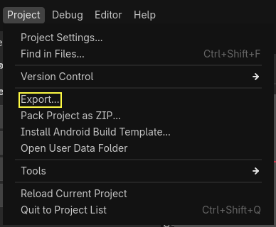
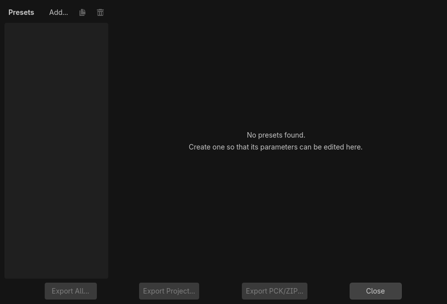
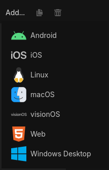
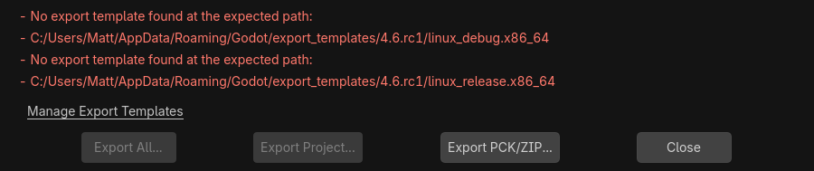
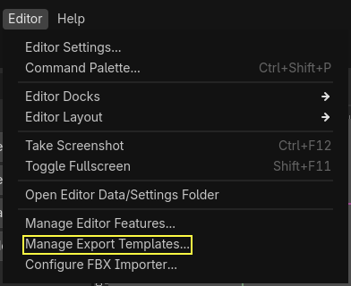
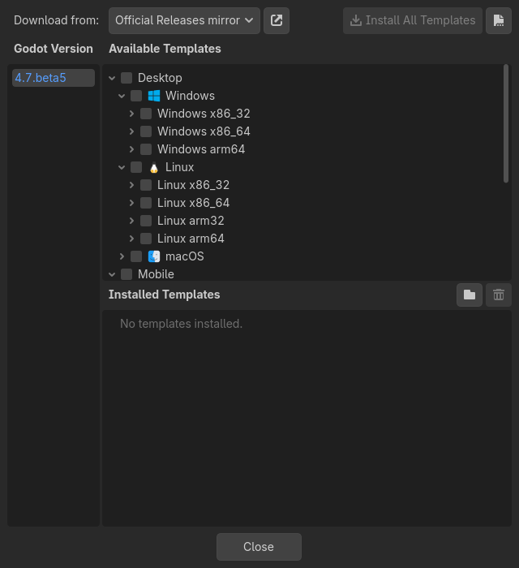
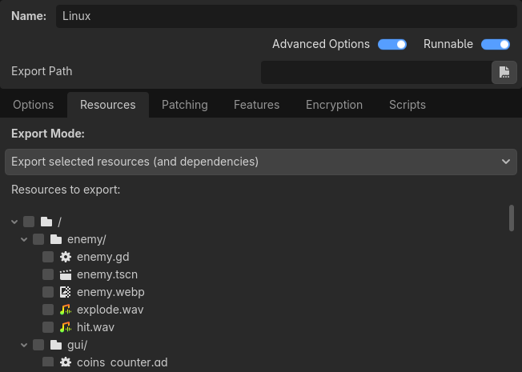

Exporting projects
Why export?
Originally, Godot did not have any means to export projects. The developers would compile the proper binaries and build the packages for each platform manually.
When more developers (and even non-programmers) started using it, and when our company started taking more projects at the same time, it became evident that this was a bottleneck.
On PC
Distributing a game project on PC with Godot is rather easy. Drop
the Godot binary in the same directory as the project.godot file,
then compress the project directory and you are done.
It sounds simple, but there are probably a few reasons why the developer may not want to do this. The first one is that it may not be desirable to distribute loads of files. Some developers may not like curious users peeking at how the game was made, others may find it inelegant, and so on. Another reason is that the developer might prefer a specially-compiled binary, which is smaller in size, more optimized and does not include tools like the editor and debugger.
Finally, Godot has a simple but efficient system for creating DLCs as extra package files.
On mobile
The same scenario on mobile platforms is a little worse. To distribute a project on those devices, a binary for each of those platforms is built, then added to a native project together with the game data.
This can be troublesome because it means that the developer must be familiarized with the SDK of each platform before even being able to export. While learning each SDK is always encouraged, it can be frustrating to be forced to do it at an undesired time.
There is also another problem with this approach: different devices prefer some data in different formats to run. The main example of this is texture compression. All PC hardware uses S3TC (BC) compression and that has been standardized for more than a decade, but mobile devices use different formats for texture compression, such as ETC1 and ETC2.
Export menu
After many attempts at different export workflows, the current one has proven to work the best. At the time of this writing, not all platforms are supported yet, but the supported platforms continue to grow.
To open the export menu, click the button:

The export menu will open. However, it will be completely empty. This is because we need to add an export preset.

To create an export preset, click the Add… button at the top of the export menu. This will open a drop-down list of platforms to choose from for an export preset.

The default options are often enough to export, so tweaking them is usually not necessary. However, many platforms require additional tools (SDKs) to be installed to be able to export. Additionally, Godot needs export templates installed to create packages. The export menu will complain when something is missing and will not allow the user to export for that platform until they resolve it:

At that time, the user is expected to come back to the documentation and follow instructions on how to properly set up that platform.
The buttons at the bottom of the menu allow you to export the project in a few different ways:
Export All: Export the project as a playable build (Godot executable and project data) for all the presets defined. All presets must have an Export Path defined for this to work.
Export Project: Export the project as a playable build (Godot executable and project data) for the selected preset.
Export PCK/ZIP: Export the project resources as a PCK or ZIP package. This is not a playable build, it only exports the project data without a Godot executable.
Export templates
Export templates must be installed to export projects. To manage your export templates go to .

This will open the export template manager.

Here you can see all export templates that are and aren't installed. There are two ways to install export templates. First, you can check the box for the platform and architecture you want to use, then click the button.
Note
If you're unsure which architecture you need, check your platform's export page for a detailed description.
Below the platform options there's another option called ICU Data. This is required for emojis and the following languages:
Burmese
Chinese
Japanese
Korean
Central Khmer
Lao
Thai
If you click the button in the upper right of the window, you can install templates from a TPZ file (essentially a ZIP archive). You can download a TPZ file of all export templates from the download page of the website.
There is no inherent advantage to using the TPZ file for all platforms. It is functionally identical, and it will take up more space compared to only selecting what you need.
Resource options
When exporting, Godot makes a list of all the files to export and then creates the package. There are 5 different modes for exporting:
Export all resources in the project
Export selected scenes (and dependencies)
Export selected resources (and dependencies)
Export all resources in the project except resources checked below
Export as dedicated server

Export all resources in the project will export every resource in the project. Export selected scenes and Export selected resources gives you a list of the scenes or resources in the project, and you have to select every scene or resource you want to export.

Export all resources in the project except resources checked below does exactly what it says, everything will be exported except for what you select in the list.
Export as dedicated server will remove all visuals from a project and replace them with a placeholder. This includes Cubemap, CubemapArray, Material, Mesh, Texture2D, Texture2DArray, Texture3D. You can also go into the list of files and specify specific visual resources that you do wish to keep.
Note
Files and folders whose name begin with a period will never be included in
the exported project. This is done to prevent version control folders like
.git from being included in the exported PCK file.
Below the list of resources are two filters that can be setup. The first allows
non-resource files such as .txt, .json and .csv to be exported with
the project. The second filter can be used to exclude every file of a certain
type without manually deselecting every one. For example, .png files.
Configuration files
The export configuration is stored in two files that can both be found in the project directory:
export_presets.cfg: This file contains the vast majority of the export configuration and can be safely committed to version control. There is nothing in here that you would normally have to keep secret..godot/export_credentials.cfg: This file contains export options that are considered confidential, like passwords and encryption keys. It should generally not be committed to version control or shared with others unless you know exactly what you are doing.
Since the credentials file is usually kept out of version control systems, some export options will be missing if you clone the project to a new machine. The easiest way to deal with this is to copy the file manually from the old location to the new one.
Exporting from the command line
In production, it is useful to automate builds, and Godot supports this
with the --export-release and --export-debug command line parameters.
Exporting from the command line still requires an export preset to define
the export parameters. A basic invocation of the command would be:
godot --export-release "Windows Desktop" some_name.exe
This will export to some_name.exe, assuming there is a preset
called "Windows Desktop" and the template can be found. (The export preset name
must be written within quotes if it contains spaces or special characters.)
The output path is relative to the project path or absolute;
it does not respect the directory the command was invoked from.
The output file extension should match the one used by the Godot export process:
Windows:
.exemacOS:
.appor.zip(or.dmgwhen exporting from macOS)Linux: Any extension (including none).
.x86_64is typically used for 64-bit x86 binaries.HTML5:
.zipAndroid:
.apkiOS:
.zip
You can also configure it to export only the PCK or ZIP file, allowing a single exported main pack file to be used with multiple Godot executables. When doing so, the export preset name must still be specified on the command line:
godot --export-pack "Windows Desktop" some_name.pck
It is often useful to combine the --export-release flag with the --path
flag, so that you do not need to cd to the project folder before running
the command:
godot --path /path/to/project --export-release "Windows Desktop" some_name.exe
See also
See Command line tutorial for more information about using Godot from the command line.
PCK versus ZIP pack file formats
Each format has its upsides and downsides. PCK is the default and recommended format for most use cases, but you may want to use a ZIP archive instead depending on your needs.
PCK format:
Uncompressed format. Larger file size, but faster to read/write.
Not readable and writable using tools normally present on the user's operating system, even though there are third-party tools to extract and create PCK files.
ZIP format:
Compressed format. Smaller file size, but slower to read/write.
Readable and writable using tools normally present on the user's operating system. This can be useful to make modding easier (see also Exporting packs, patches, and mods).
Warning
Due to a known bug, when using a ZIP file as a pack file, the exported binary will not try to use it automatically. Therefore, you have to create a launcher script that the player can double-click or run from a terminal to launch the project:
:: launch.bat (Windows)
@echo off
my_project.exe --main-pack my_project.zip
# launch.sh (Linux)
./my_project.x86_64 --main-pack my_project.zip
Save the launcher script and place it in the same folder as the exported binary.
On Linux, make sure to give executable permissions to the launcher script using
the command chmod +x launch.sh.